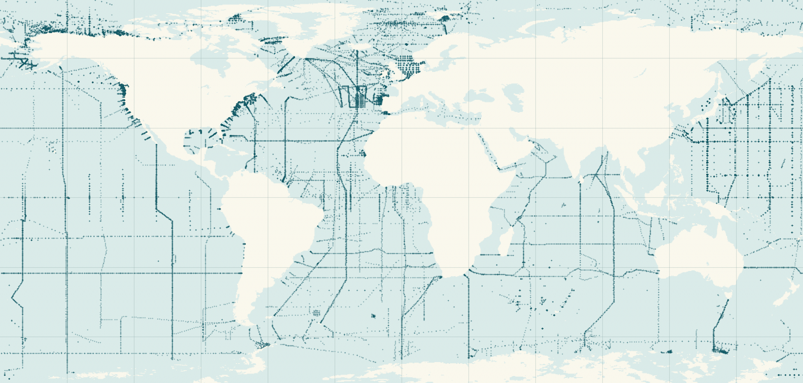
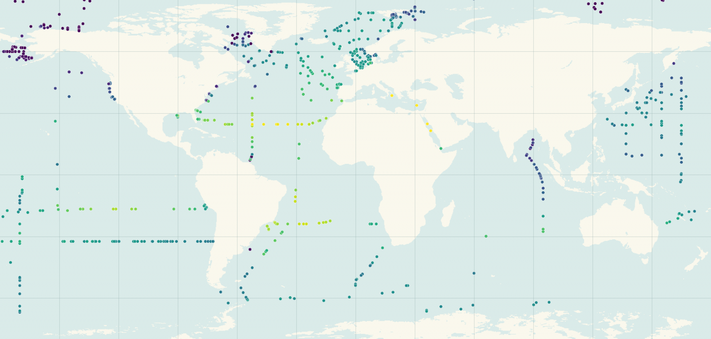

Mapping surface ocean alkalinity
How does total alkalinity vary between research cruises? HighresTA combines bottle measurements with salinity, temperature and other ocean fields to estimate surface alkalinity and its uncertainty around the globe.
0.25° target grid8 days between fields6 model runs compared

Where ships sampled
42,134 collocated GLODAPv2.2023 bottle records before training filters.

What the model predicts
Ensemble Q50 at 700 held-out bottles, pooled across dates.
≤2150 ≥2450 µmol kg⁻¹ · Rashomon run 20261106Follow a bottle through the model →
From salinity to a prediction
A linear fit to salinity provides a baseline. CatBoost learns the remaining differences from measured alkalinity and estimates three quantiles. This run averages each quantile across 42 models.
Entire cruises stay together when observations are split. Six validation splits each contribute seven near-optimal models, with a separate block reserved for testing.
Open the full interactive method → (served site)
How the variants perform
Start with identical held-out rows. Across the runs, replacing in-situ salinity with gridded salinity roughly doubles RMSE. The coastal and offshore breakdown shows where that penalty is largest.
Open full-width comparison →
Explore the reconstruction
Viewer layout preview. The map shows saved bottle predictions. The published grid will support date selection, pan and zoom, and a value readout.
Map layers
Q50 · ≤2150 ≥2450 µmol kg⁻¹